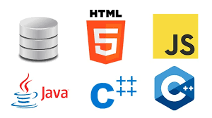

¿Qué es un lenguaje de programación?
Un lenguaje de programación es un conjunto de reglas y símbolos que permiten a los programadores comunicarse con la computadora para crear software, aplicaciones y sistemas.
Estos lenguajes permiten resolver problemas, automatizar tareas y desarrollar soluciones tecnológicas.
Lenguajes de Programación
Java
Lenguaje orientado a objetos usado en sistemas empresariales y Android.
Python
Lenguaje simple y potente usado en IA, ciencia de datos y automatización.
JavaScript
Lenguaje fundamental para crear páginas web interactivas.

PHP
Lenguaje del lado del servidor para sistemas web.

Tipos de Lenguajes
- Lenguajes compilados
- Lenguajes interpretados
- Lenguajes de alto nivel
- Lenguajes de bajo nivel

Aplicaciones
Los lenguajes de programación se usan en desarrollo web, aplicaciones móviles, videojuegos, inteligencia artificial y sistemas empresariales.
Características
- Sintaxis definida
- Reglas semánticas
- Portabilidad
- Facilidad de aprendizaje
Ejemplos de uso
Sistemas de gestión académica, páginas web, videojuegos, aplicaciones bancarias y plataformas educativas.